Kısa Kullanım Kılavuzu
Sürüm 2.0.15 · Yalnızca bilmeniz gerekenler · 10 dakikada okunur
DestekOfis, Excel'de ya da Google Sheets'te tuttuğunuz tabloyu ofisteki herkesin aynı anda kullandığı bir çalışma alanına dönüştürür. Tablonuzu yüklersiniz; program kolonlarınızı tanır, ekranları ona göre kurar. Siz kayıtlara not, tahsilat, görev ve belge eklersiniz; Excel dosyanız hiç bozulmaz.
- Kurulum ve İlk Giriş
- Verinizi Yükleyin
- Ana Ekran
- Veri Sağlığı
- Kayıtla Çalışmak
- Uyarılar
- Kasa
- Cari
- Taksitler
- Stok
- Çek / Senet
- Fatura
- ANLIK DURUM
- Raporlar
- Belgeler ve Mesajlar
- Yönetici İçin
- Bir Sorun mu Var?
1. Kurulum ve İlk Giriş
- Sunucu bilgisayara kurulum dosyasını (DestekOfis-Kurulum.exe) çalıştırın, Sunucu Bilgisayar'ı seçip Kur'a basın. Windows "bilgisayarınızı korudu" derse Ek bilgi → Yine de çalıştır.
- Personel bilgisayarlarına aynı dosyayı kurun. Program sunucuyu ağda kendisi bulur; masaüstündeki DestekOfis simgesiyle açılır.
- İlk girişi sunucudan yapın: kullanıcı adı admin, parola Ofis2026!. Program yeni bir parola ister; not edin.
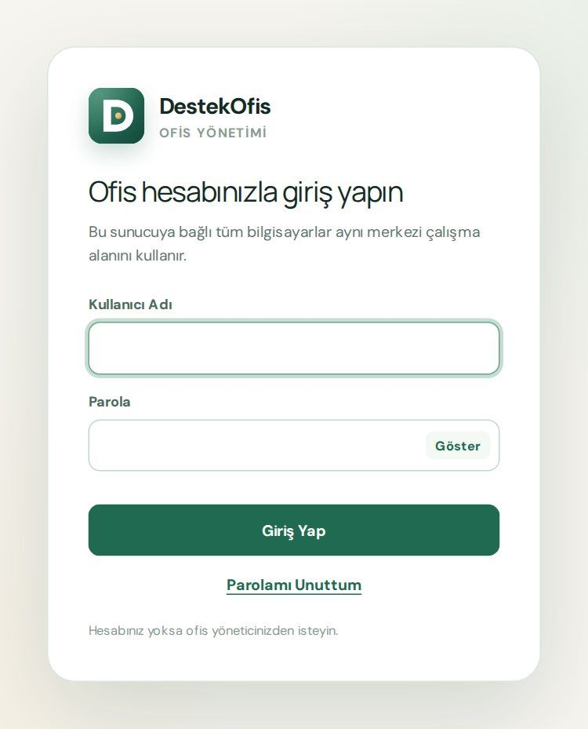
2. Verinizi Yükleyin
- Excel dosyanızı açılış ekranındaki kutuya sürükleyin (ya da Excel Dosyası Seçin) veya Google Sheets bağlantısını yapıştırıp Bağla'ya basın.
- Açılan ön izlemede program her kolonu ne saydığını yazar. Sarı olan varsa bakın, gerekirse açılır listeden doğru türü seçin (ör. Son Tarih / Vade), sonra Yükle.
- Program sektörünüzü önerir: doğruysa Evet, Uygula; değilse Başka Sektör Seç. Listede yoksa Kendi Sektörünüzü Oluşturun: kayıtlarınıza ne dediğinizi (öğrenci, tekne, hasta…) yazın, Kaydet ve Uygula.
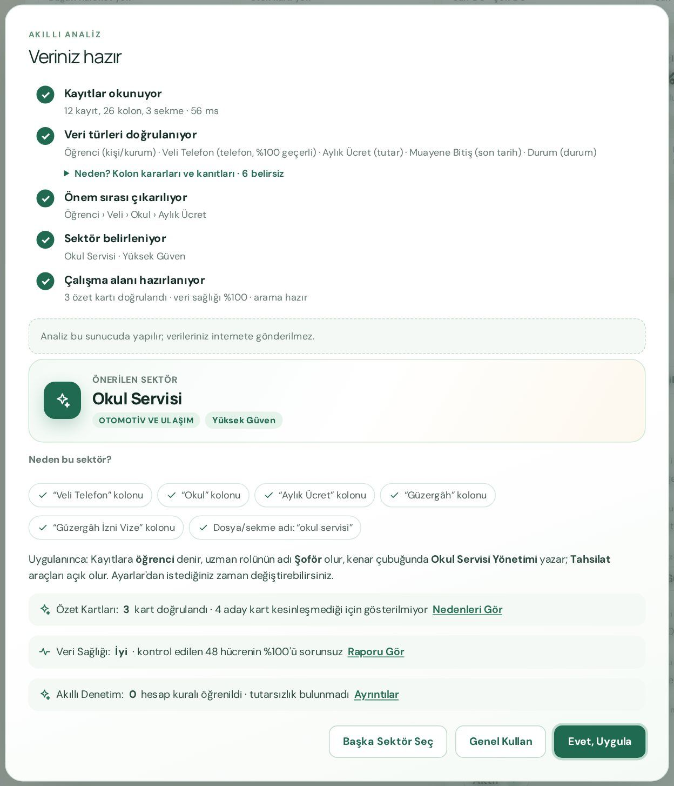
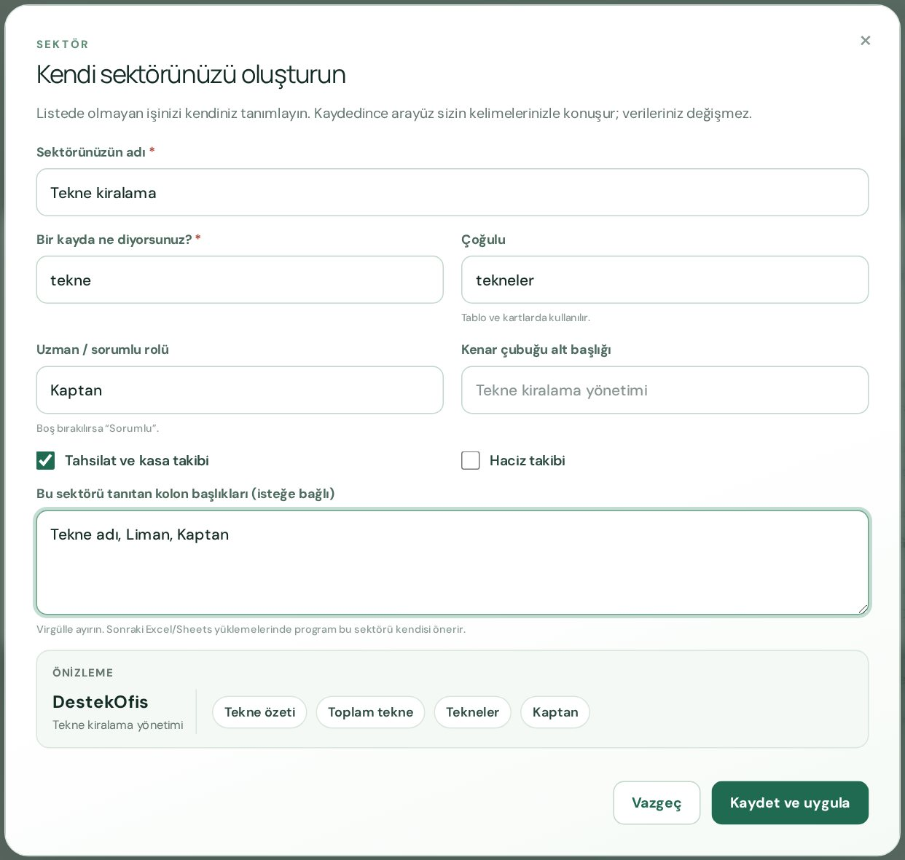
Exceliniz yok mu? Açılış ekranındaki Taslak Excel'i İndir'e basın, sektörünüzü seçin. Sektörünüze uygun başlıklarla boş bir Excel iner; doldurup aynı ekrandan yükleyin.
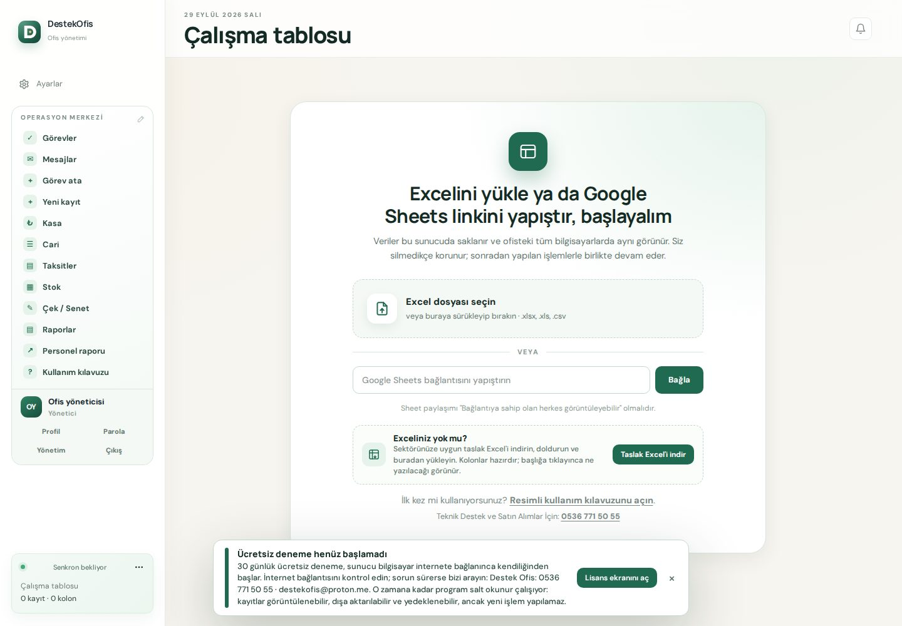
3. Ana Ekran
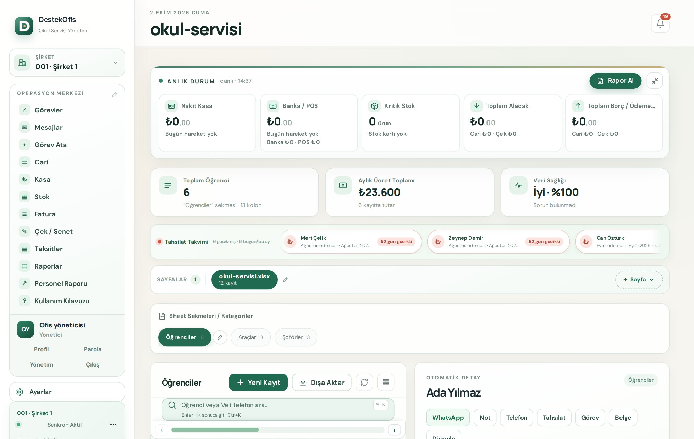
- Sol üstte Şirket: 001 · Unvan ▾. Her şirketin verisi ayrıdır (cari, Kasa, stok, taksit, çek/senet, fatura, sayfalar); seçim yalnız sizin ekranınızı değiştirir. + Yeni Şirket ile ikinci şirket (ör. 002) sıfırdan açılır; yönetimi Yönetim → Şirketler'de.
- Sol menü · Operasyon Merkezi: Görevler, Mesajlar, Görev Ata, Cari, Kasa, Stok, Fatura, Çek / Senet, Taksitler, Raporlar, Personel Raporu ve bu kılavuz. Köşedeki kalemle düğmelere kendi adlarınızı verebilirsiniz. Yeni Kayıt ortadaki tablonun başlığında, Dışa Aktar'ın yanındadır.
- Kullanıcı kartı: Profil, Parola, Yönetim (yalnız yönetici) ve Çıkış. Hemen altındaki Ayarlar veri kaynağını, eşitlemeyi, sektörü ve görünümü açar (yönetici).
- Üstte zil: bekleyen tahsilatlar, son günü yaklaşan işler ve görevleriniz.
- ANLIK DURUM (yalnız yönetici) ve özet kartları: toplam kayıt, tutar toplamı, Veri Sağlığı. Karta tıklayınca ilgili liste açılır.
- Tahsilat Takvimi şeridi: vadesi gelen ödemeler; bir pile tıklayınca tahsilat girilir.
- Sayfalar şeridi (ortada): her Excel / Google Sheets ayrı bir sayfadır (eski adıyla oturum); ikinci dosya ikinci sayfa olur, veriler karışmaz. Pile tıklayınca o sayfa açılır; kalemle adını değiştirin. + Sayfa: Excel'den Aktar ve Google Sheets'ten Aktar (ön izleme ve kolon eşlemeyle veri sayfası; tarih kolonları tanınır, takvim ve uyarılar çalışır) ya da Boş Sayfa (elle doldurulan serbest sayfa). Bütün sayfaların yaklaşan tarihleri zilde ve Tahsilat Takvimi'nde sayfa adıyla görünür; tıklayınca o sayfaya geçersiniz.
- Sekmeler: açık sayfanın Excel sayfaları. ✎ ile adını değiştirin ya da silin. Serbest sayfanın menüsünde Veri Sekmesine Dönüştür: başlık ve değerler veri sekmesi olur (tarih uyarıları, detay kartı ve raporlar kapsar).
- Tablo: üstünde Dışa Aktar (Excel/CSV), yenile ve sık görünüm; altında arama kutusu (kutunun her yerine tıklayıp yazabilirsiniz, Enter ilk sonuca gider). Kolon genişliğini başlığın sağ kenarından sürükleyin; çift tık eski haline döndürür.
- Sağda detay kartı: seçtiğiniz kaydın bütün bilgileri ve işlemleri.
Açık pencereler kendiliğinden yenilenir: Kasa, Cari, Taksitler, Stok, Çek / Senet ya da Raporlar açıkken siz ya da ofisteki başka biri bir işlem yaparsa (ör. bağlı bir çek hareketini silmek) pencere kapatıp açmadan güncellenir.
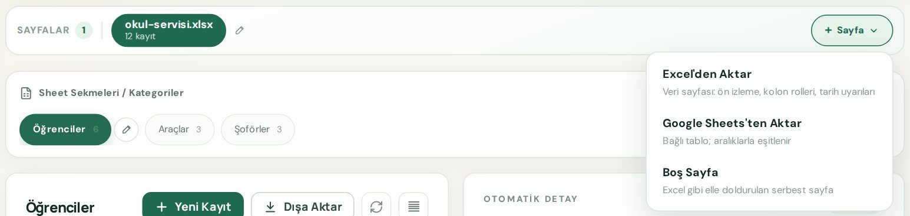
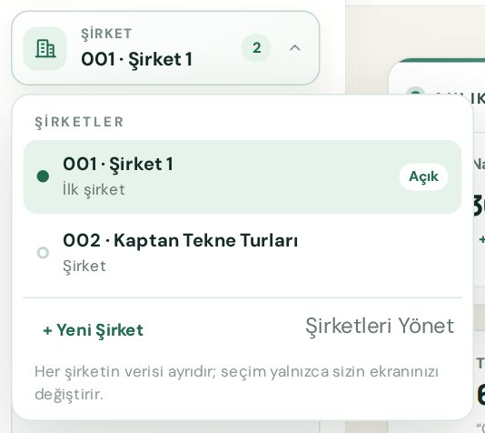
4. Veri Sağlığı
Ana ekrandaki Veri Sağlığı kartı tablonuzdaki eksik ve hatalı hücreleri sayar (kimliği boş kayıt, geçersiz telefon, okunamayan tarih…). Karta tıklayın:
- Kayda tıklayınca tabloda o satıra gidersiniz; düzeltmeyi tablodan yaparsınız.
- Bilerek böyle olan bir uyarıyı Yok Say ile kapatın: tek kayıt için satırın yanındaki, hepsi için başlıktaki Yok Say (N). Puan buna göre yükselir (%100'e kadar); karar ofisteki herkes için geçerlidir ve yeni yüklemede de korunur. Yeni hatalı kayıt gelirse yalnız o uyarır.
- Fikrinizi değiştirirseniz pencerenin altındaki Yok Sayılanlar'dan Geri Al.
- Toplu Düzeltmeler aynı türden farklı yazılmış telefon, tarih ve durumları tek tıkla tek yazıma çevirir.
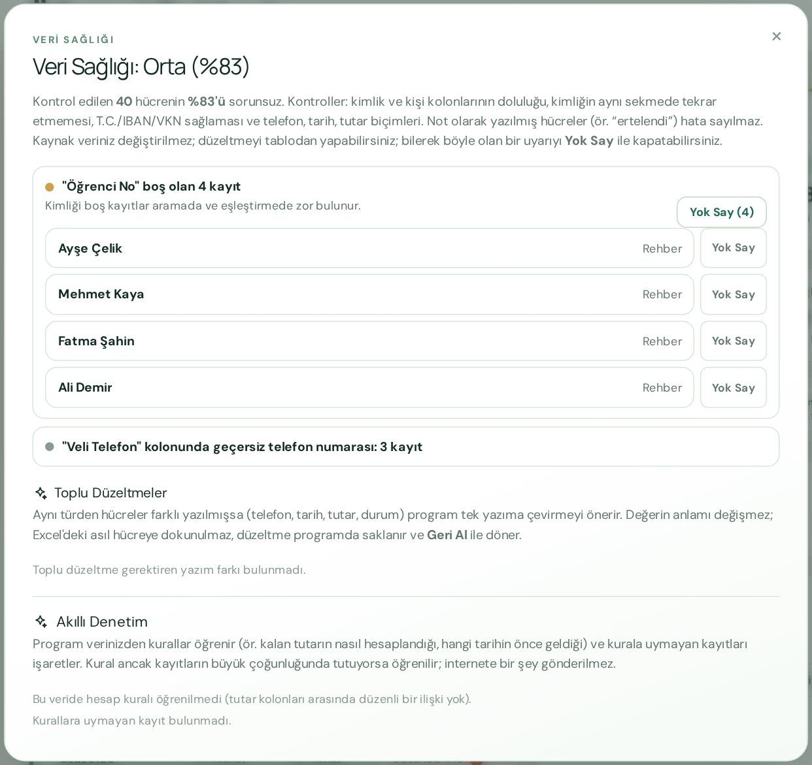
5. Kayıtla Çalışmak
- Tablodan bir satıra tıklayın; sağda kaydın kartı açılır. Arama kutusu tüm sekmelerde arar.
- Bir bilgiyi değiştirmek için üzerine gelip ✎'ye basın ya da Düzenle ile hepsini birden değiştirin. Kim, ne zaman değiştirdi kaydedilir.
- ▾ işaretli alanlar açılır listedir: tıklayın, listeden seçin.
- Kartın düğmeleriyle Not, Telefon, Tahsilat, Görev ve Belge ekleyin; WhatsApp kayıttaki numaraya yazar.
- Sütun ekle / sil (yönetici): başlığın üzerine gelin; + Ekle sağına yeni sütun açar, × Sil sütunu kaldırır. Excel dosyanız değişmez; Geri Al ya da Yönetim → Silinenler geri getirir.
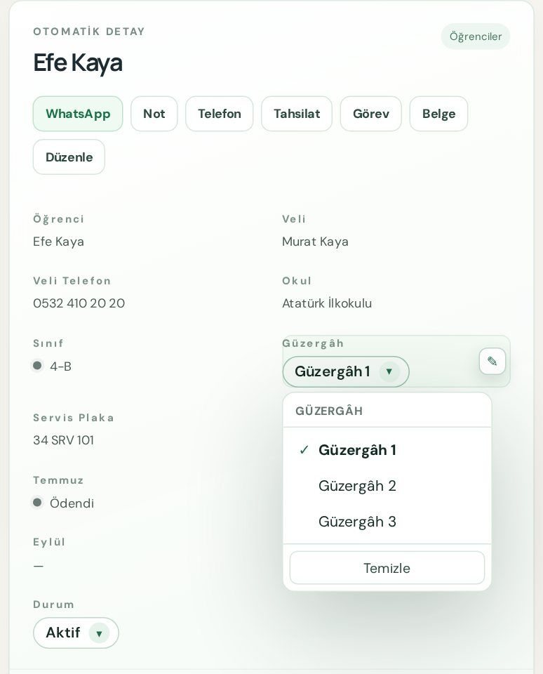
Kayıt ve cari ayrıdır: Yeni Kayıt formu cari açmaz. Kişinin hesap kartı için Cari ekranında + Yeni Cari ya da Excel / Sheets’ten Yükle kullanın. Cariyi tablodaki kişiye bağlamak isterseniz cari kartındaki Tablodaki Kayıt alanını kullanın; ad yazılınca tabloda aynı adlı tek kayıt varsa kendiliğinden seçilir.
6. Uyarılar
Vadesi gelen tahsilatlar, son günü yaklaşan işler ve görevler sağ altta tek tek belirir; her uyarı 20 saniye kalır, üzerine gelirseniz bekler.
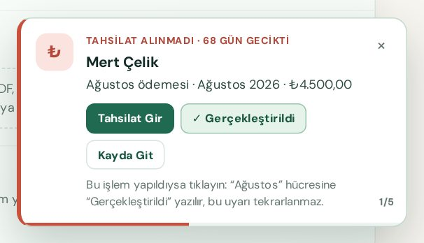
- Tahsilat Gir: ödemeyi kaydeder; tutar Kasa'ya da düşer.
- ✓ Gerçekleştirildi: iş yapıldıysa basın; hücreye "Gerçekleştirildi" yazılır ve uyarı bir daha gelmez (bildirimdeki Geri Al ile döner).
- Kayda Git: ilgili kaydı açar.
Ay sütunlu tablolar (Ocak–Aralık): ay hücresine taksit tutarını yazarsanız program o ayı ödenecek taksit sayar ve ayı gelince uyarır. Tahsilatı kayıttan ya da kayan pilden girin; hücreye "ödendi" yazmak da o ayı kapatır.
Acil görev kırmızı bildirimle gelir ve tamamlanana kadar zilde kalır. Bütün uyarılar üstteki zildedir; ✕ ile kendi listenizden kaldırırsınız.
7. Kasa ve Banka
Sol menüden Kasa. Kayıtlara, carilere, taksitlere ve satışlara girdiğiniz tahsilatlar buraya kendiliğinden gelir. Diğer gelir ve giderleri + Tahsilat ve − Ödeme ile ekleyin. Dönemi Bu Ay, Geçen Ay, Bu Yıl, Tümü ya da Tarih Aralığı ile seçin; PDF İndir ile dökümü alın. Çek / senet ya da stoktan gelen satırın yanındaki ↗ kaynağını açar.
- Ödeme ve tahsilat yolu: her tahsilat ve ödemede Nakit, Havale / EFT ya da kartı seçin: tahsilatta POS, sizin ödemenizde Kredi Kartı. Cari kartında tahsilatta Çek / Senet seçerseniz evrak formu açılır; satışta Açık Hesap tutarı müşterinin borcuna yazar.
- Sekmeler: Nakit Kasa, Banka, POS / Kredi Kartı ya da Tümü. Her sekmenin kendi bakiyesi ve PDF'i vardır.
- Bakiye eksiye düşecekse (nakit kasa, banka ya da kredi kartı) program sorar. Yolu yanlış seçtiyseniz düzeltin; doğruysa Yine de Kaydet. Yönetici bir hesap için sormayı kapatabilir ya da kaydı tamamen engelleyebilir (15. bölüm).
- İleri tarih yok: Kasa, cari, stok ve taksit hareketine bugünden sonraki bir tarih yazılamaz. Gelecekteki ödeme ya da tahsilatı taksit veya çek / senet vadesi olarak girin; günü gelince tahsil edin.
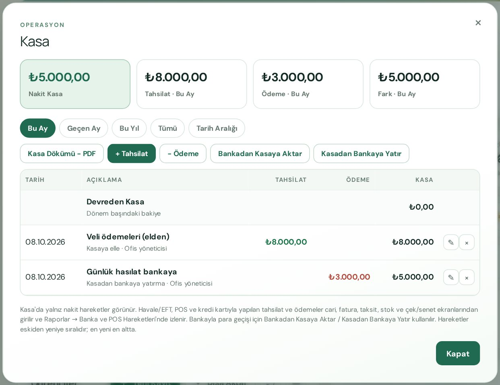
8. Cari
Sol menüden Cari. Kiminle para alışverişi yapıyorsanız (müşteri, öğrenci, veli, site sakini, tedarikçi) onun hesap kartı.
- Carileri toplu açın: Excel / Sheets’ten Yükle (binlerce kişi tek seferde). Yüklemeden önce hangi satırın hazır, hangisinde sorun olduğu gösterilir. Aynı kişi ikinci kez açılmaz; Excel'deki ek kolonlar (Veli, Okul, Plaka…) kartta aynı adla görünür.
- Tek cari: + Yeni Cari. Tablodaki Kayıt alanı cariyi tablodaki kişiye bağlar; aynı adlı iki kişi varsa program tahmin etmez, listeden siz seçersiniz.
- Hareket girin: kartta + Tahsilat (Kasa'ya girer, makbuzu alınır), Borç Yaz, Alacak Yaz, − Ödeme (Kasa'dan çıkar). Açık taksit kartı varsa tahsilatı taksite mi yazacağınız sorulur. Satış Faturası ve Alış Faturası pilleri bu cariye fatura keser (bkz. Fatura).
- Bakiye = borç − alacak. Borçlu: cari size borçlu; Alacaklı: siz cariye borçlusunuz; Kapalı: bakiye sıfır. Listede, kartta, raporlarda ve çıktılarda aynı sözcük ve renk.
- Arama ve süzgeç: ad, telefon, cari no, adres ve ek alanlar; tür, grup, bakiye (Borçlular, Alacaklılar, Taksidi Gecikenler…).
- Çıktı: listede PDF, Yazdır ve Excel (süzgeç varsa yalnız süzülenler); kartta cari ekstre PDF'i.
- Açılış bakiyesi: tedarikçinin bakiyesi Alacaklı (sizin borcunuz), müşterininki Borçlu yazılır. Yanlış yönde girdiğiniz harekette ✎ ile Yön'ü değiştirin.
- Aynı kişi iki kez açılmaz: ad yazarken aynı adlı cari varsa altında gösterilir; kaydederken Mevcut Cariyi Aç diyebilirsiniz.
WhatsApp ile Ekstre ve Mesaj
- Tek cari: kartta WhatsApp → Ekstre Gönder, Mesaj Gönder ya da Sohbeti Aç. Altta son gönderimler görünür.
- Toplu: listede soldaki kutularla carileri seçin → WhatsApp Ekstre ya da WhatsApp Mesaj. Hiç seçmezseniz Tümüne WhatsApp … süzgeçteki bütün carilere gönderir (önce grup ya da Borçlular seçin). Başlıktaki kutu süzgeçteki herkesi seçer; sonra birkaç kişinin işaretini kaldırırsanız o kişiler gönderime girmez (997 cari seçildi, 3 hariç).
- Hazırlık: telefonu olmayan ya da sabit hat olan cariler ayrı gösterilir. Ekstrede dönemi seçin; mesajda hazır şablonu seçin ya da kendiniz yazın. {Ad}, {Bakiye}, {Sıradaki Taksit} gibi değişkenler her kişide kendi bilgisiyle dolar; sağda ön izleme vardır. Yalnız Borçlu Carilere Gönder ile alacaklıları çıkarın.
- Gönderim: Gönderime Başla → her kişi için mesaj hazır gelir; WhatsApp'ta Aç ve Sıradakine Geç deyin, açılan WhatsApp'ta Gönder'e basın. Otomatik Sıra açıkken WhatsApp'tan programa dönmeniz yeter: sıradaki kişinin sohbeti kendiliğinden açılır (beklemeden açmak için Şimdi Aç). Ekstre gönderiminde Ekstre PDF'ini kendiliğinden indir açıksa her kişinin ekstresi kişinin adıyla iner; dosyayı sohbete sürükleyin. Mesajı o kişiye özel düzeltebilir, Atlayabilirsiniz. Gönderilenler cari kartına yazılır.
Mesajları sizin WhatsApp'ınız (bilgisayardaki WhatsApp ya da WhatsApp Web) gönderir; ücretli bir hizmet gerekmez.
9. Taksitler
Sol menüden Taksitler. Kişilerin taksitli borçlarını takip eder. Kartlar Grup › Alt Grup ile düzenlenir (servis plakası › güzergâh, site › blok, okul › sınıf). Grup listesi her grubun kaç kartı ve kaç carisi olduğunu gösterir: 34 SRV 202 · 0 kart · 3 cari.
- Tek kart: + Yeni Kart → cariyi seçin (ad yazınca bulunur; yoksa bu adla cari açılır); kartın Kayıt Tarihi ve grubu cariden gelir. Toplam tutar, taksit sayısı ve ilk vadeyi yazın. Taksitleri sonra Otomatik Dağıt ya da + Taksit ile de kurabilirsiniz. İlk vade Kayıt Tarihi'nden önce olamaz; Kayıt Tarihi bugünden ileri olamaz.
- Birden çok cariye birden: + Toplu Taksitlendir ya da süzgeç satırındaki Cari Seç. Açılan pencerede grup, alt grup ve adla süzün, kutularla carileri seçin (başlıktaki kutu hepsini seçer) → Seçilenlere Taksit Planı. Tutarı herkese aynı yazın ya da her carinin kartındaki alandan (ör. Servis Ücreti) okutun; taksit sayısı ve ilk vadeyi girin. Program önce kaç kart, toplam ne kadar ve hangi carilere açılacağını gösterir; N Kartı Aç deyince kartlar açılır. Açık kartı olan cari listeye gelmez; çift kart açılmaz.
- Kartsız grup: bir grubu seçtiğinizde carileri olup hiç kartı yoksa liste boş kalmaz; Bu Gruba Toplu Taksitlendir ile o grubun carileri seçili gelir.
- Veresiye satışı ya da mevcut borcu taksitlendirme: cari kartında + Taksit Planı → Borcun Kaynağı: Carinin Mevcut Borcu (tutar bakiyeden gelir). Borç ikinci kez yazılmaz, yalnız vadelere bölünür. Satış anında da yapabilirsiniz: Stok → − Çıkış → Açık Hesap → Bu Satışı Taksitlendir. Yeni bir hizmet ya da satışsa Yeni Borç seçin.
- Tahsilat: kartta + Tahsilat ya da taksitin yanındaki ₺. Tutar sıradaki taksit kadar hazır gelir; en eski açık taksite sayılır, fazlası sonrakine geçer. Kasa'ya düşer; Makbuz A5 boyutundadır. İade için − Ödeme / İade.
- Excel'den ya da tablodan: Excel / Sheets’ten Yükle listenizdeki taksitleri gerçek vade ve tutarlarıyla kurar. Yüklediğiniz tabloda ödeme planı varsa (ay kolonları, "1. Taksit Tarihi / Tutarı" ya da toplam + taksit sayısı) Tablodan Aktar her kişiyi ön izlemede gösterir; Aktar deyince kart tablodaki kayda ve cariye bağlanır, Excel'de ödenmiş kısım açılış sayılır (Kasa değişmez). Yanlış aktardıysanız Son Aktarımlar → Geri Al.
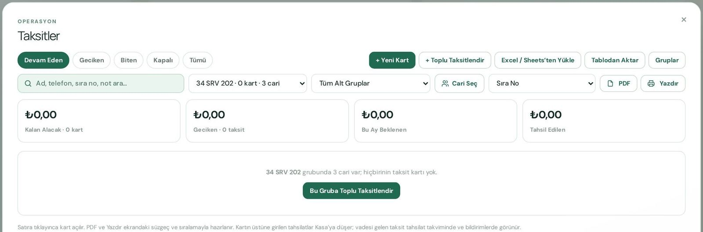
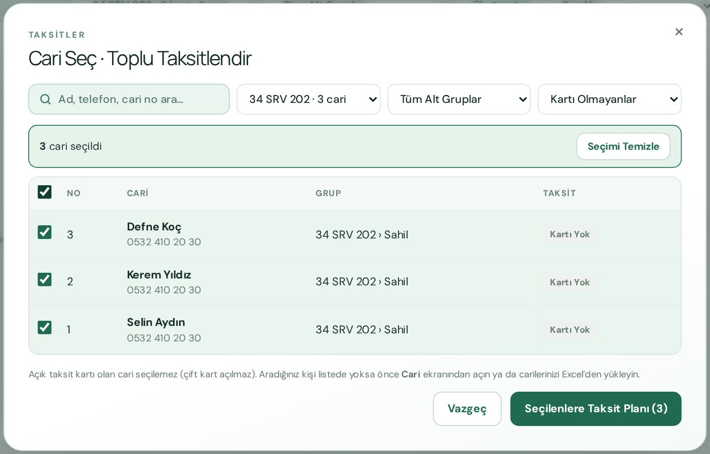
- Liste: Devam Eden, Geciken, Biten, Kapalı, Tümü; göstergelerde kalan alacak, geciken, bu ay beklenen ve tahsil edilen. Tahsilatı bırakan müşteri için kartı Kapat: uyarı vermez, kayıt durur.
- Uyarı: vadesi geçen taksit takvimde, sağ altta ve zilde Tahsilat alınmadı olarak görünür.
- PDF ve Yazdır: kart ekstresi ve süzülmüş liste (ör. yalnız bir plakanın gecikenleri).
- Tablodaki kişiden: ortadaki listede kişinin kartındaki Tahsilat taksitlerini gösterir; Tahsil Et tutarı hazır getirir.
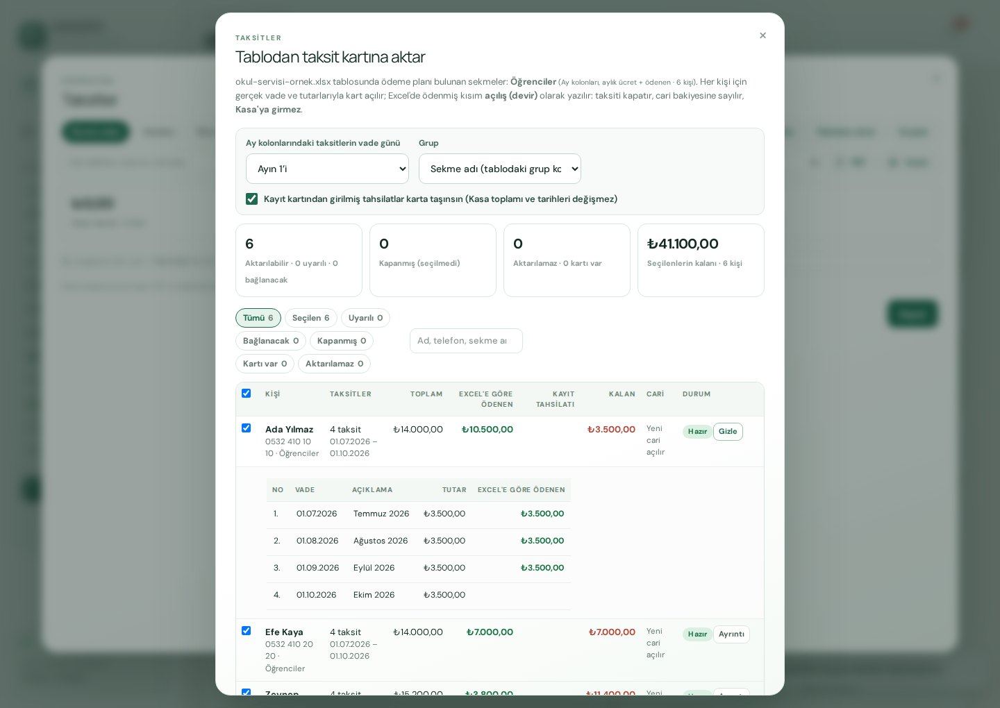
10. Stok
Sol menüden Stok. Ürünler (çay, yağ, kâğıt…) ve giriş/çıkış hareketleri; Mevcut = girişler − çıkışlar.
- + Yeni Ürün: Stok Kodu (isteğe bağlı; barkod okutabilirsiniz, her ürünün kodu ayrıdır), ad, birim (Adet, Kg, Lt, Metre, M², Paket, Koli, Saat…; listede yoksa kendiniz yazın), kategori, kritik seviye, birim fiyat. Açılış miktarı yazıp Kasa'ya yansıt'ı işaretlerseniz miktar × birim fiyat Kasa'dan gider olarak düşer. Toplu açılış için Excel / Sheets’ten Yükle.
- Alış ve satış fiyatı: ürün kartında ikisini ayrı yazın; − Çıkış satış fiyatıyla, + Giriş alış fiyatıyla açılır.
- + Giriş / − Çıkış: miktar ve birim fiyatı yazınca tutar hesaplanır. Para Nakit, POS (alımda Kredi Kartı) ya da Havale / EFT ile Kasa'ya/Banka'ya yazılır ya da Açık Hesap ile cariye.
- ↩ Müşteri İadesi: geri gelen ürün stoğa girer; parası müşteriye geri ödenir ya da borcundan düşülür. Taksitlendirilmiş satıştan iade gelirse taksit kartı da o kadar küçülür.
- Kasiyer: Yönetim → Yeni Rol'de Satış Yapma yetkisi verilen kişi ürün kartına dokunmadan satış ve iade girer.
- Kritik seviye: ürün bu miktara inince listede üstte kırmızı görünür, sol menüde rozet çıkar.
Hizmet kalemi: Kalem Türü'nü Hizmet yapın (yıkama, servis ücreti…); stoğu tutulmaz, satışı Kasa'ya ya da cariye yazılır.
11. Çek / Senet
Sol menüden Çek / Senet. Aldığınız ve verdiğiniz çek ve senetlerin portföyü.
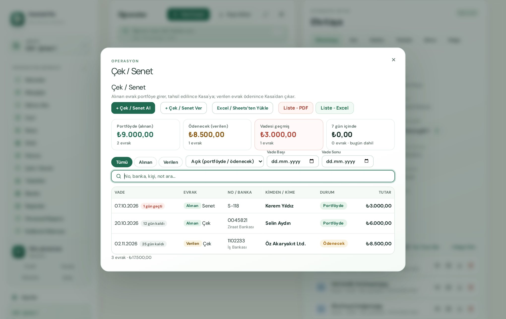
- + Çek / Senet Al: cari, tutar, vade, seri no, banka. İsterseniz Taksite Say: evrak carinin en eski açık taksitlerine sayılır. Evrak Portföydedir; carinin borcu düşer, para henüz Kasa'da değildir.
- Vadesinde: evrak kartında Tahsil Et (Kasa'ya girer), Ciro Et (tedarikçiye verirsiniz) ya da Karşılıksız / İade (müşteri yeniden borçlanır).
- + Çek / Senet Ver: tedarikçiye borç yazılır; vadesinde Ödeme Yap Kasa'dan çıkarır.
- Yanlış işlem: evrak kartındaki “…” İşlemini Geri Al son işlemi ve bağlı kayıtlarını birebir kaldırır; açık Kasa ve Cari pencereleri hemen güncellenir.
- Vade takibi: vadesi geçen ve bugün gelen evrak rozette, takvimde ve bildirimlerde; 7 gün içinde gelenler ANLIK DURUM'da.
- Excel / Sheets’ten Yükle ile mevcut portföyünüzü alın. Liste PDF ve Excel olarak iner.
12. Fatura
Sol menüden Fatura. Satış, alış ve iade faturalarınız; her fatura kaydedildiği anda stoğu, cariyi, Kasa'yı, taksit kartını ve çek/senedi birlikte yazar; ayrıca bir yere girmezsiniz.
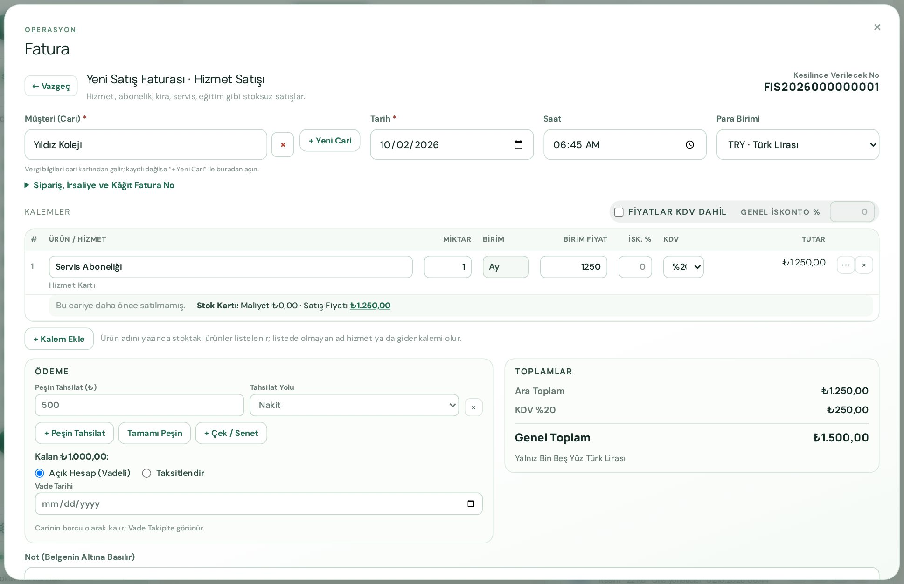
- + Yeni Fatura → ne yapacağınızı seçin: Stoktan Satış, Hizmet Satışı, Serbest Meslek Makbuzu, Fiyat Farkı Faturası, Satıştan İade; Stoğa Mal Alışı, Hizmet ve Gider Alışı, Alıştan İade. Stok, KDV ve ödeme kuralları seçtiğiniz senaryodan gelir. Cari kartındaki Satış Faturası / Alış Faturası pili aynı formu cari dolu açar.
- Cari: adını yazıp seçin; vergi dairesi, VKN/TCKN ve adres cari kartından gelir. Kayıtlı değilse yanındaki + Yeni Cari formdan ayrılmadan açar; kaydedince seçili gelir.
- Kalemler: Stok Kodu ya da ürün adını yazınca stoktan öneri gelir; kodu yazıp Enter'a basınca (barkod okuyucu da) ürün doğrudan seçilir. Miktar, birim fiyat, iskonto ve KDV; bütün satırlara aynı oran için üstteki Tüm Kalemlere KDV. Stoğa Mal Alışı'nda stokta olmayan ürün için listeden + Yeni Stok Kartı: kart fatura kaydedilince açılır, ürün stoğa girer. Cari ve ürün seçilince bu müşteriye ve başkalarına son satış/alış fiyatı görünür, tıklayınca fiyata yazılır. Not belgenin altına basılır.
- Ödeme: peşin kısmı Nakit / Havale / POS (alışta Kredi Kartı) ile Kasa'ya, Çek / Senet ile portföye yazılır; kalanı Açık Hesap (vadeli) ya da Taksit (taksit kartı açılır).
- Faturayı Kaydet (ya da Taslak Olarak Kaydet: deftere işlenmez, Taslaklar sekmesinde bekler).
- Düzeltme: kaydedilmiş faturanın kartında Düzenle → değiştirin → Değişiklikleri Kaydet. Numara aynı kalır; stok, cari, Kasa ve taksit yeni hale göre yazılır. İadesi olan, kilitli dönemdeki ya da taksitinden tahsilat alınmış faturada Düzenle kapalıdır (nedeni düğmenin üstünde yazar); o zaman İptal Et ya da İade.
- İade: kartta İade pili ya da senaryoda Satıştan / Alıştan İade; en üstteki arama ile iade edilecek faturayı bulun, kalem ve miktarı seçin. Para Kasa'dan geri verilir ya da cari borcundan düşer; taksitli satışta taksit kartı iade kadar küçülür.
- Belgeyi verin: kartta Satış Faturası - PDF / Yazdır, WhatsApp (PDF iner, sohbet açılır) ve E-Posta (PDF iner, cari kartındaki adrese hazır metinle e-posta penceresi açılır). Resmî e-Fatura bağlantısı açılana kadar belge Müşteri Fişi başlığıyla basılır; resmî fatura yerine geçmez.
- Toplu işler: listede soldaki kutularla belgeleri seçin → Seçilenleri PDF / Excel; Taslaklar sekmesinde Seçilenleri Kaydet (eski tarihli önce), Satış/Alış sekmesinde Seçilenleri İptal Et. Kaydedilemeyen ya da iptal edilemeyen belge nedeniyle bildirilir ve seçili kalır.
- Tekrarla: kira, aidat, abonelik gibi her ay düzenlenen fatura için kartta Tekrarla; her dönem taslak hazır gelir, Taslaklar'dan toplu kaydedersiniz.
- Fatura Ayarları (dişli): belgenin üstünde yazan firma bilgisi, Logo (seçtiğiniz görsel küçültülüp belgeye basılır), banka IBAN'ları, belge alt notu, varsayılan KDV ve vade günü, belgenin altındaki Teslim Alan / Kaşe-İmza kutuları.
- Raporlar → Tüm Raporlar: Satış Faturaları, Alış Faturaları, İade Faturaları, KDV Özeti, Açık Faturalar, Ürün Bazında Satış ve Kârlılık. Açık faturalar Vade Takip'te ve ANLIK DURUM'da da görünür.
- Kimler görür: yönetici ve muhasebe; başka birine Yönetim → Kullanıcılar → Yetkiler → Fatura ile açılır.
13. ANLIK DURUM
Yalnız yöneticinin ana ekranında: Kasa / Banka, Kritik Stok, Toplam Alacak (carilerin borcu + portföydeki çek/senet + açık satış faturaları) ve Toplam Borç / Ödemeler. Her işlemde sayfa yenilenmeden değişir; rakamlar Kasa, Cari, Stok ve Çek / Senet ekranlarıyla aynıdır. Kutuya tıklayınca ilgili ekran açılır; Rapor Al Raporlar penceresini açar.
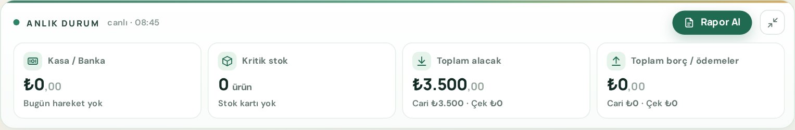
14. Raporlar
Sol menüden Raporlar (ya da ANLIK DURUM'daki Rapor Al). Üstteki sekmeden seçin:
- Cari Ekstre: tarih aralığı → Raporu Getir: her cari için devir, dönem borç ve alacak, bakiye. Cariye tıklayınca ekstresi açılır. Henüz cari yoksa Cari Ekranını Aç ya da Tablodaki Kişileri Cari Yap.
- Vade Takip: vadesi olan her açık kalem tek listede (taksit, çek/senet, ileri tarihli Kasa, tablodaki ödeme günleri). Gecikmiş, Bugün, 7 / 30 / 90 Gün; satıra tıklayınca kaynağı açılır.
- Nakit Akış: bugünkü kasadan başlayan tahmini kasa; en düşük günü gösterir.
- Çek / Senet: portföy raporu.
- Tüm Raporlar: Kasa, Cari, Taksit, Çek / Senet, Stok, Fatura ve kayıt raporları (ör. Cari Listesi ve Bakiyeler, Tüm Cari Hareketleri, Cari Bazında Tahsilat, Taksit Kartları). Soldan raporu, üstten dönemi seçin; ön izleme gelir.
- Tablo Raporları: yalnız Excel tablonuza dayalı raporlar.
- Ana Defter (Tüm Raporlar içinde): Hesap Planı Mizanı, Yevmiye Defteri ve Defter Mutabakatı. Mutabakatta her satır Tutarlı olmalıdır; Fark Var görürseniz destek hattını arayın. Defterleri bozacak bir kayıt hiç yazılmaz ve Mutabakat Günlüğü'nde görünür.
Her rapor PDF İndir ve Excel İndir ile iner.
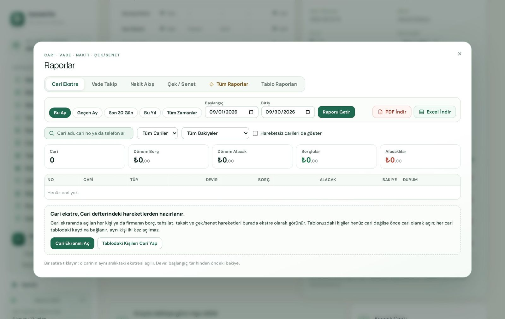
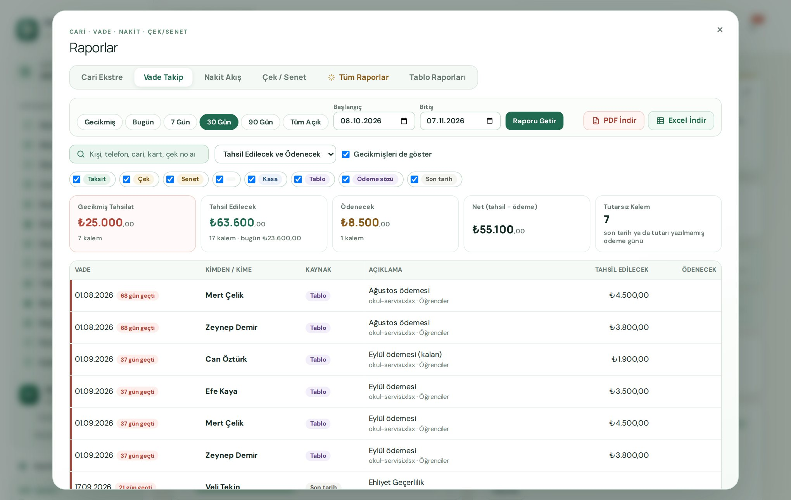
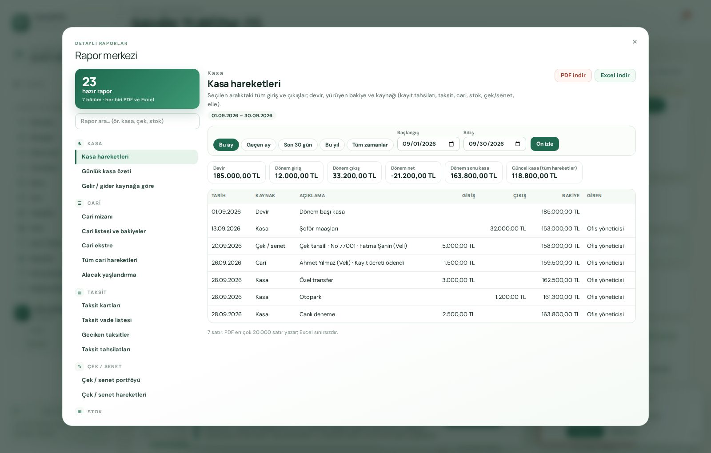
Kimler görür: yönetici tüm sekmeleri. Başka birine açmak için Yönetim → Kullanıcılar → Yetkiler → Raporlar → Finans Raporları.
15. Belgeler ve Mesajlar
Belge: kartta Belge'ye basın ya da dosyaları kartın üzerine sürükleyin; ekran görüntüsünü Ctrl+V ile yapıştırın. PDF, resim, Word, Excel ve UYAP dosyaları eklenir. Birden çok belge varsa Yan Yana Gör: seçtiklerinizi indirir ya da yazdırırsınız.
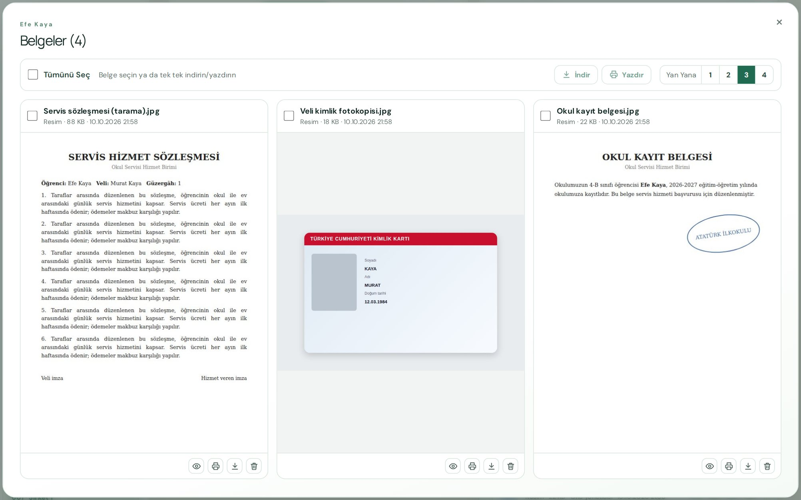
Mesajlar: Ofis Geneli herkese açıktır; kişiye yazdığınızı yalnız o kişi görür. Eski mesajlar için ↑ Önceki Günün Mesajlarını Yükle; 30 günden eskileri Arşivi İndir ile açarsınız.
16. Yönetici İçin
- Kullanıcılar: + Yeni Kullanıcı: ad, kullanıcı adı, rol, ilk parola. Ad ve kullanıcı adını yanlarındaki ✎ ile düzeltin. Parola Sıfırla personelin parolasını yeniler.
- Yetkiler: satırdaki Yetkiler pili bütün yetkileri açar: rolün verdikleri işaretli gelir; kutuyla o kişiye ekler (yeşil) ya da çıkarırsınız (kırmızı) → Yetkileri Kaydet. + Yeni Rol ile kendi rolünüzü kurun.
- Sil: kişi giriş yapamaz; yaptıkları geçmişte adıyla kalır. Silinen Kullanıcılar'dan geri alınır.
- Kurtarma anahtarı: Kurtarma Anahtarı Oluştur → yazdırın. Parolanızı unutursanız giriş ekranında Parolamı Unuttum → anahtar + yeni parola. Anahtar da kayıpsa sunucu bilgisayarında aynı ekrandan Sunucu Kodu Oluştur; kodu Başlat menüsündeki DestekOfis → Yönetici kurtarma kodunu aç gösterir (10 dakika geçerli).
- Yedekler: program 6 saatte bir kendiliğinden yedek alır. Yönetim → Yedekler'den yedek alıp indirin; Drive'a da Yedekle ile her yedek Google Drive / OneDrive klasörünüze de kopyalanır (Kaydet ve Bağla, Şimdi Dene).
- Silinenler: silinen kayıt, sekme, belge, tahsilat, kasa hareketleri ve faturalar Yönetim → Silinenler'dedir; Geri Yükle eski yerine getirir.
- Şirketler: Yönetim → Şirketler: + Yeni Şirket (kod önerilir: 002, 003…), Adını / Kodunu Değiştir (veri aynı şirkette kalır), Kullanıcı Yetkileri (kim hangi şirketi görür; yönetici hepsini), Birleşik Rapor (seçilen şirketlerin Kasa, banka/POS, cari, stok, açık fatura toplamları yan yana + toplam; PDF/Excel). Verisini Sıfırla: Tüm Hareketleri Sil (kartlar ve ayarlar kalır, bakiyeler sıfır) ya da Tümünü Sıfırla; önce zorunlu yedek alınır, onay için şirket kodu ve parolanız istenir; lisans, kullanıcılar ve öbür şirketler etkilenmez. Sil (001 silinmez): önce yedek, klasör saklanır.
- Eksi bakiye denetimi: Yönetim → Sistem → Eksi Bakiye Denetimi'nde Nakit Kasa, Banka ve Kredi Kartı için ayrı ayrı seçin: Uyar (sorar, onayla kaydeder), Engelle (kaydetmez), Kontrol Yok (ör. kredili mevduat hesabı).
- Dönem kilidi: ay kapandığında Yönetim → Sistem → Dönem Kilidi ve Mutabakat'ta son günü seçip Kilitle. O tarih ve öncesine hareket eklenemez, düzeltilemez, silinemez. Düzeltme gerekirse Kilidi Kaldır, düzeltin, yeniden kilitleyin. Kart, defterlerin tutarlı olup olmadığını da gösterir.
- Güncelleme: Yönetim → Sistem → Güncellemeleri Denetle → Şimdi Güncelle. Veriler ve lisans korunur; önce yedek alınır.
- Sektör ve görünüm: Ayarlar → Sektör ve Görünüm.
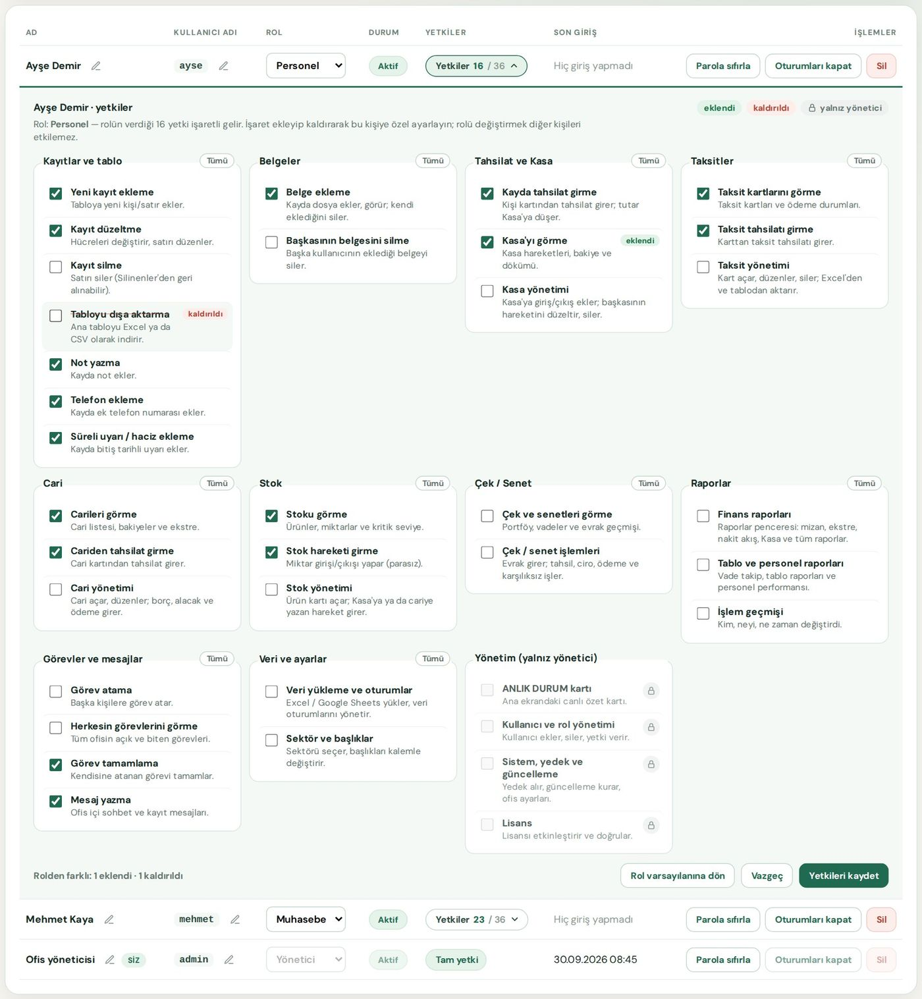
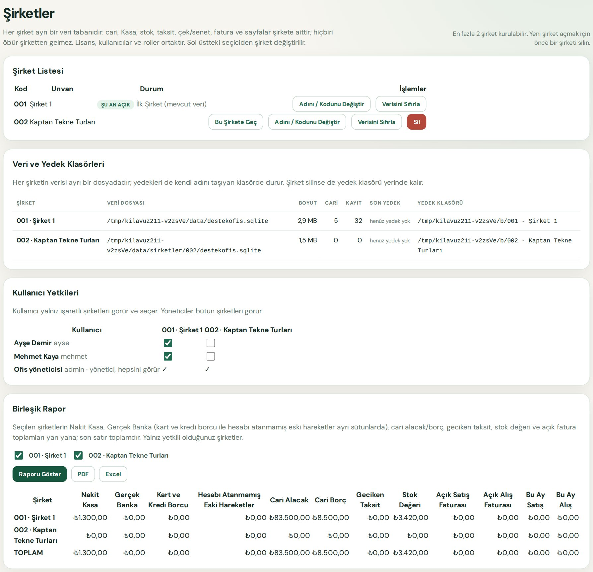
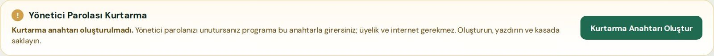
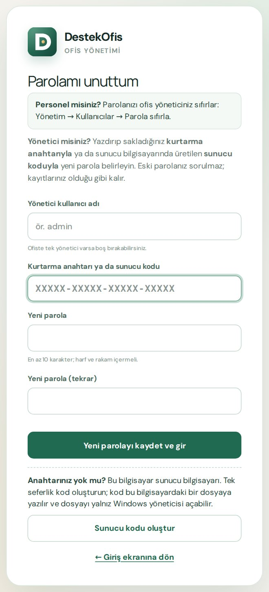
17. Bir Sorun mu Var?
| Durum | Ne Yapmalı? |
|---|---|
| Personel bilgisayarı bağlanamıyor | Sunucu bilgisayar açık ve aynı ağda mı? Uykuya geçmediğinden emin olun. |
| "Deneme henüz başlamadı" / "Lisans doğrulanamadı" | Sunucunun internetini kontrol edin; ardından Yönetim → Lisans → Şimdi Doğrula. |
| Süre doldu, program salt okunur | Kayıtlarınız duruyor. Bize ulaşın; lisansınız tanımlanınca kaldığınız yerden devam edersiniz. |
| "DestekOfis … sürümüne güncellendi" | Yazdığınızı kaydedip Yenile'ye basın. |
| Yönetici parolasını unuttum | Giriş ekranında Parolamı Unuttum (15. bölüm). |
| Bir şeyi yanlışlıkla sildim | Hemen çıkan bildirimdeki Geri Al; sonra ise Yönetim → Silinenler → Geri Yükle. |
| İnternet kesildi | Çalışmaya devam edin; program 7 gün internetsiz çalışır. |
| Excel'de sürükleyince 1-2-3 gitmiyor, çift tık doldurmuyor | Program Excel dosyanıza hiç yazmaz (yalnız okur; Dışa Aktar yeni dosya üretir). Excel'de Dosya → Seçenekler → Gelişmiş → "Doldurma tutamacını ve hücre sürükleyip bırakmayı etkinleştir" işaretli olsun; 1 ve 2 yazılı iki hücreyi birlikte seçip sürükleyin (Ctrl basılıysa kopyalar); hücre biçimi "Metin" ise Genel yapıp yeniden girin; çift tık yandaki sütun doluysa çalışır. |
DestekOfis 2.0.17 · Kısa Kullanım Kılavuzu · Ekran görüntüleri örnek verilerle hazırlanmıştır.